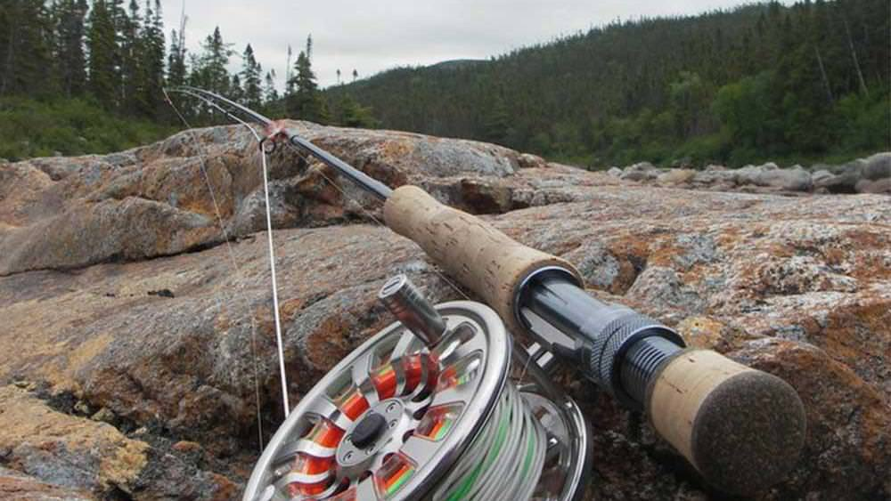

Fishing Basics
Fishing is a popular outdoor activity enjoyed by people of all ages. It involves using a fishing rod, reel, and bait to catch fish. Whether you're a beginner or an experienced angler, understanding the basics is crucial for a successful fishing trip.
Tip: Patience is key in fishing. Take your time and enjoy the tranquility of nature.